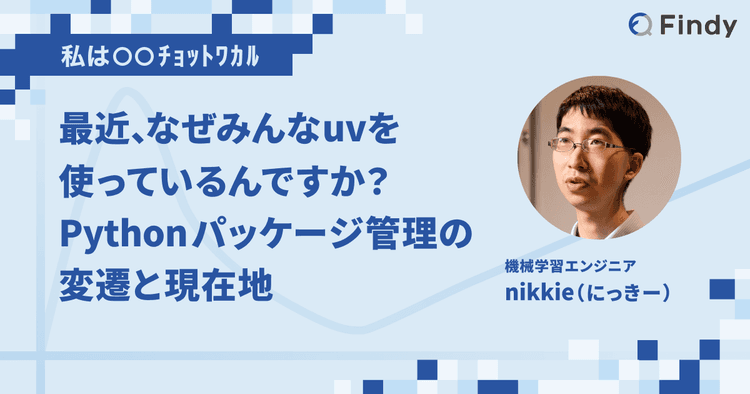
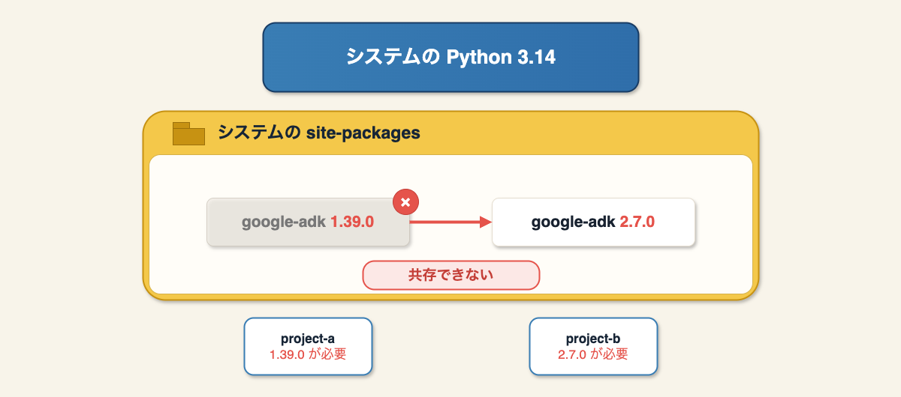
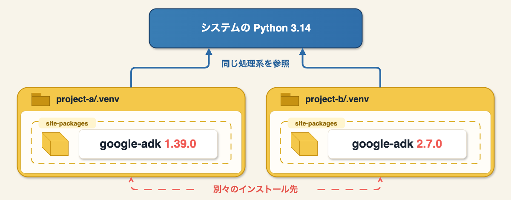
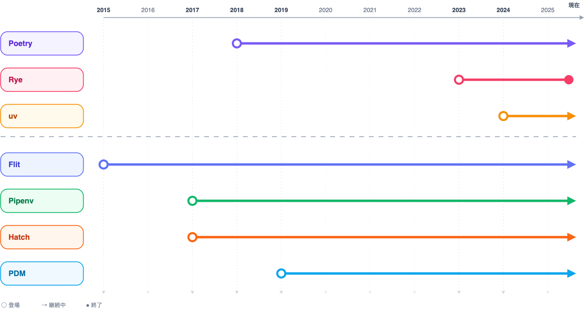

Pythonチュートリアル、venv を作って pip install と2026年も教え続けますか？
Pythonチュートリアル、venv を作って pip install と2026年も教え続けますか？
- Event:
PyCon JP 2026
#pyconjpB- Presented:
2026/8/21 nikkie
意見を集める 時間です！
PyCon JP 2026のプログラムは「対話と交流」
Code of Conduct 行動規範 を守って楽しく 決闘
各位の技術的な選択に 敬意 を
Python公式チュートリアルより
$ python3.14 -m venv .venv
$ source .venv/bin/activate
(.venv) $ python -m pip install httpx22026年時点でも最適な一歩目？
議論ポイント：最初に教えるときに「venv を作って pip install」を選択しますか？
Python Boot Camp でやりたいのは、パッケージ（requests）を使ったWeb API呼び出し
#pyconjpBでツイート推奨
お前、誰よ
nikkie（にっきー） [1] ・Codex Ambassador (Tokyo)・Devin Ambassador [2]
機械学習エンジニア・Speeda AI Agent 開発（A2A・MCP 提供）
「venvはもはや必須科目ではない」

IMO：Pythonの こんなチュートリアルはどうだい？
uv導入 [3]。 uvでPythonをインストール
Pythonの文法説明
仮想環境を省略。スクリプトは後述する inline script metadata で実行（
uv run script.py）
メッセージ「仮想環境を ツールに任せて楽してこーぜ」
Pythonの仮想環境は変わらず必要
仮想環境を どう管理するか は再考の余地がある
パッケージを使う最初の一歩をどう案内するか、ここに参加者の皆さんと 集合知
目次：Pythonチュートリアル、venv を作って pip install と2026年も教え続けますか？
仮想環境はなぜ必要か
仮想環境の管理方法（人力 or ツール）
ひろがる、ツールで仮想環境管理
2026年で考えたいトピック
Part1 仮想環境はなぜ必要か
仮想環境はなぜPython開発者にこれまでも（そしてこれからも）必要なのか
仮想環境とは ディレクトリ
% python3.14 -m venv --help
usage: python3.14 -m venv ENV_DIR [ENV_DIR ...].venv/ というディレクトリができている [4]% python3.14 -m venv .venv --upgrade-deps
% ls -al
drwxr-xr-x@ 7 nikkie staff 224 8月 20 23:54 .venvなぜディレクトリを作るのか
サードパーティライブラリ のインストール先にするため
あるパッケージのバージョン違いがマシンに共存可能になる（図解続く）
仮想環境を使わないとしたら、インストール先は1箇所

仮想環境で共存可能に

.venv/ には何がある？ [5]
.venv
├── bin
│ ├── activate
│ ├── pip
│ ├── pip3
│ ├── pip3.14
│ ├── python -> python3.14
│ ├── python3 -> python3.14
│ ├── python3.14 -> /Library/Frameworks/Python.framework/Versions/3.14/bin/python3.14
│ └── 𝜋thon -> python3.14
├── lib
│ └── python3.14/
└── pyvenv.cfg.venv/bin/python
マシンにインストールしたPython処理系への シンボリックリンク
.venv/bin/activateは環境変数PATHを更新して、.venv/bin/pythonが見つかるようにしている標準ライブラリも処理系のものを使う
.venv/lib/python3.14/site-packages/
サードパーティライブラリのインストール先のディレクトリ
仮想環境ごとに分かれているので、バージョン違いが共存 する
Part2 仮想環境の管理方法
Pythonプロジェクトの話
かつて人力、今はツールへ
人力仮想環境管理を指南 [6]
$ python -m venv .venv --upgrade-deps
$ source .venv/bin/activate
(.venv) $ python -m pip install httpx2
(.venv) $ python -m pip freeze > requirements.txt
(.venv) $ python -m pip uninstall httpx2スクリプトからPythonプロジェクトへ
公式チュートリアルの範囲やスクリプトをいくつか書くだけなら人力管理で十分
Pythonプロジェクト では実装に加え、テストやドキュメントも
テスト時の依存は本番稼働には不要
dev-requirements.txt-r requirements.txt
pytest
# 他開発に必要なパッケージできなくはないが...
人力管理はしんどくなる
pip freezeは仮想環境内のパッケージをファイルに書き出している [8]そもそも 順番が逆 では？ [9]
pip uninstallは 単体アンインストール なので、使っていないパッケージが残ることも
Pythonプロジェクトの仮想環境管理ツールを入れることに
ここ10年くらい、プロジェクトの仮想環境の扱いを簡単にするツールの提案
共通の性質の1つ：ロックファイル
まず依存解決して結果をファイルに残し、それに仮想環境を同期する

『ハイパーモダンPython』5章に基づき作成
Poetry（2018〜） [10]
$ pipx install poetry$ poetry new my-project
$ cd my-project
$ poetry add 'httpx2>=2.12.0' # poetry.lock 作成
$ poetry run <command> # 仮想環境を有効にして実行$ poetry install # poetry.lockを元に環境再現（+ editable install）機能拡張：Python自体も管理
uv（2024〜） [13]
$ curl -LsSf https://astral.sh/uv/install.sh | sh # 他miseで入れる。などなど$ uv python install # Python自体も管理
$ uv init my-project
$ cd my-project
$ uv add 'httpx2>=2.12.0' # uv.lock 作成
$ uv run <command> # 仮想環境を有効にして実行$ uv sync # uv.lockを元に環境再現。*爆速*uv使う上で [15] 🏃♂️
生成される
pyproject.tomlも使い倒しましょう。 [tool.ham] に設定書けます！uv runはロックファイル更新とそれに仮想環境の同期が 自動 [14]migrate-to-uv：Poetryなどからuvへ移行
Part2🥟 仮想環境の管理方法
Pythonプロジェクトの仮想環境管理ツールの提案。仮想環境を忘れられる
Python処理系自体も管理する機能拡張
Part3 プロジェクト以外も仮想環境は人力管理不要に
Takeaway： 2点ぜひお持ち帰り ください
これらがあるから一歩目を見直したくなっているんです
1️⃣PyPIにあるCLIツールの使用
一時的な仮想環境
仮想環境+マシングローバルにインストール
従来の人力管理 [16]
$ cd $(mktemp -d)
$ python3.14 -m venv .venv --upgrade-deps
$ source .venv/bin/activate
(.venv) $ python -m pip install openai==2.34.0
(.venv) $ openai api chat.completions.create -m sakana-namazu -g user '台風とコロッケの関係は？'uvx または pipx run
$ uvx openai@2.34.0 api chat.completions.create -m sakana-namazu -g user '台風とコロッケの関係は？'uvやpipxが 一時的な仮想環境 を作成
そこにCLIツールをインストールして実行
uv tool install または pipx install
$ uv tool install openai==2.34.0
$ openai api chat.completions.create -m sakana-namazu -g user '台風とコロッケの関係は？'uvやpipxが仮想環境を作成
そこにCLIツールをインストールし、グローバルなパス を通す
実体がバイナリなら仮想環境不要
2️⃣inline script metadata
サードパーティライブラリを使ったスクリプトを書くチュートリアルに推す
書籍で採用してほし〜
従来の人力管理
$ python3.14 -m venv .venv --upgrade-deps
$ source .venv/bin/activate
(.venv) $ python -m pip install httpx2
(.venv) $ python script.pyPEP 723 - inline script metadata
# /// script
# requires-python = ">=3.12"
# dependencies = [
# "httpx2",
# ]
# ///inline script metadataをサポートしたツール（例：uv run）は [18]
requires-pythonを満たすバージョンで仮想環境を作成dependenciesを仮想環境にインストールその仮想環境でスクリプトを実行
詳しくはPyCon JP 2024
uvはinline script metadataを書く
$ uv init --script awesome.pyawesome.py# /// script
# requires-python = ">=3.14"
# dependencies = []
# ///uvはinline script metadataを書く
$ uv add httpx2 --script awesome.pyawesome.py# /// script
# requires-python = ">=3.14"
# dependencies = [
# "httpx2>=2.10.0",
# ]
# ///inline script metadataはいいぞ
完成したPythonスクリプトの 持ち運び に超便利（コーディングエージェントのフックスクリプト、stdioのMCPサーバ実装）
実装中は
PYTHONINSPECT=1 uv run awesome.pyで 対話モードを立ち上げ てデバッグも可能
Part3🥟 プロジェクト以外も仮想環境は人力管理不要に
2026年、仮想環境 人力管理は卒業 できる！
uvxやuv tool installinline script metadata
uv選択の狙い
簡単 [19]
1つのツールで 知っている範囲を広げていけばよい （新たなツールの導入不要）
スクリプトの実行だけ -> Pythonプロジェクト（
uv init）
uv様々：自作CLIツールをエンジニアでない100人に配布
$ uv tool install cdcasasagi
$ cdcasasagi --helpPythonのインストールや仮想環境の管理を uvが覆い隠して簡単に してくれた
Part4 2026年で考えたいトピック
コーディングエージェント
セキュリティ（サプライチェーン攻撃）
1.コーディングエージェントとの相性
コーディングエージェントは 速い
速さは魔性：コーディングエージェントが使うツールも速くしたい
uvは速い [20]
Python処理系を介さない（Rust実装・バイナリ動作）だけでなく
PyCon US 2026にて開発者による「Peeking under the hood of uv run」
高速化のためのキャッシュの超積極活用（
uv cache dirご覧あれ）
uvがコーディングエージェントにベスト？
安全に使うため書き込めるディレクトリは制限されている [21]
コーディングエージェントが
uv runするとき、 書き込めるディレクトリとは別 のキャッシュに書き込むことに
uvのキャッシュを考慮してコーディングエージェントを設定
.codex/config.toml[sandbox_workspace_write]
writable_roots = [
"/Users/nikkie/.cache/uv", # uvのキャッシュ自体への書き込み許可
# "/Users/nikkie/.cache/codex/awesome-repo/uv", # そのリポジトリ用のuvのキャッシュで運用
]別案：コーディングエージェントには
uv run pytestを渡さず、 .venv/bin/pytest [22]
2.セキュリティ：変わり始めたPythonの世界
近年npmでサプライチェーン攻撃が展開されている（IMO：攻撃者を強く非難します）
PyPIでも 2026年3月、LiteLLMで サプライチェーン攻撃が発生
LiteLLM [23]
from litellm import completion
for model in ["openai/gpt-5.6-luna", "gemini/gemini-3.7-flash"]:
response = completion(model=model, messages=messages)
print(response.choices[0].message.content)LiteLLMへの攻撃で状況は大きく変わった
LiteLLMの最新版に悪意あるコードが仕込まれていた
最新版インストール後、importしただけで環境の秘密情報が抜かれる（uvxして踏みました）
最新版のインストールがリスク
「最新版には悪意あるコードが入っているかも」
ロックファイルがあるPythonプロジェクトなら最新版は取りに行かない（踏むリスク低）
古いプロジェクトや、
uvx・inline script metadata [24] といった使い方で ロックファイルを作っていない
ロックファイルがない状況で最新版インストールのリスクを減らす
cooldownの設定
セキュアなインデックスへの切り替え
完璧な1つの対策はない。どの対策にも穴があるが重ね合わせて貫通しなくする🧀 [25]
cooldown
最新版を一定期間避ける設定。コミュニティが攻撃を検出し、隔離・削除
~/.config/uv/uv.toml [26]exclude-newer = "7 days"~/.config/pip/pip.conf （ただしpip>=26.1） [global]
uploaded-prior-to=P7Dセキュアなインデックス
例：Takumi Guard （無料）
新規開発が止まっているようなPythonプロジェクトで採用
ロックファイルはなく、pipが古くてcooldownも効かないが、PIP_INDEX_URL 指定だけで済んで作業効果は高い
サプライチェーン攻撃のリスクを認識しましょう
私は、
uvxからuv tool installに切り替えました（最新版にアクセスする回数を減らす）提言：Python書籍（特に入門書）で最新版を入れる記載をしているのも危ないですよね（cooldown を案内しては）
Part4 まとめ🥟2026年で考えたいトピック
IMO：コーディングエージェントには
uv runよりも.venv/bin/pythonを指示したい最新版のインストールがリスクに。cooldownはじめ複数の防御策を組み合わせましょう
まとめ🌯：Pythonチュートリアル、venv を作って pip install と2026年も教え続けますか？
私の立場は「否 （＝教え続けない）」
uvでPythonを入れ、inline script metadataで仮想環境を初回は飛ばす（ただしcooldownは伝える）
仮想環境の扱い方は 少しずつよくなって きた
uvは仮想環境を「正しい使い方を簡単に、誤った使い方を困難に」した（+爆速 & ワンストップ）
10年前は人力全盛だったが、ツールが進化した今、人力以外の選択肢がある
仮想環境の抽象化・カプセル化：仕組みを詳しく知らなくても使える
Pythonで仕事をしている方は
どこかの段階で 仮想環境を理解するのをおすすめ （それは最初でなくていい）
Python処理系がどう動くのか知っている範囲を広げられる。結果、エンジニアとして解ける課題が広がる
このトークをきっかけにしてもいいかもしれませんね
参考文献リスト 🏃♂️
ご清聴ありがとうございました
あなただったら、venv を作って pip install と教えますか？
このあと15:00〜 stapyコミュニティブースへどうぞ🌸
コミュニティブースにみんなのPython勉強会あります〜 #stapy #pyconjp2026
— nikkie(にっきー) / にっP (@ftnext) 2026年8月21日
お好み焼き・宮島stapyステッカーも配布してます pic.twitter.com/EdmTG5F35q
来週東京でDevinCon！
📣 DevinCon Tokyo、8/26（水）開催決定！
— Cognition Japan (@cognition_jp) 2026年7月30日
Cognition初の日本コミュニティイベント。Devinユーザーに限らず、AI駆動開発に取り組むすべてのエンジニアをお待ちしています。Migration / SRE / AI駆動開発組織設計、各社の実践知が集まります。…